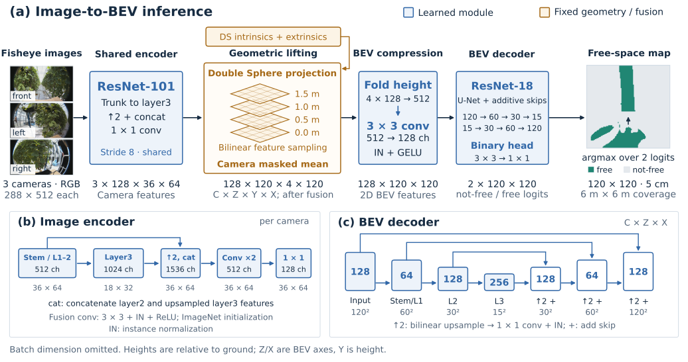
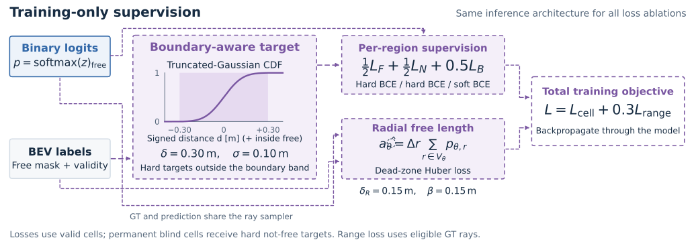

어안 영상에서 BEV free-space까지
현재 Y=4 · ResNet-101 · binary 모델을 코드와 실제 체크포인트로 확인해 그린 논문용 도식입니다.
입력 사진과 예측 지도는 동일한 검증 프레임입니다. 영문 캡션과 코드 출처는
설명 문서에 있습니다.
1. 모델 아키텍처

높이별 특징을 채널로 접어 512→128 합성곱으로 압축합니다. 이미지 인코더는 concatenate,
BEV 디코더는 additive skip을 사용합니다. 출력의 not-free에는 occupied와 unknown이 함께 포함됩니다.
2. 학습 목적함수

D_range 설정입니다. 경계 대역은 δ=0.30 m, σ=0.10 m이고,
광선 보조항은 δ_R=β=0.15 m입니다. 보조항은 출력 확률에서 계산하며 별도 출력 head가 아닙니다.
생성기: tools/render_model_architecture.py · 예제: raws1/sample_000000 · 체크포인트: D_range_s0, best epoch 37